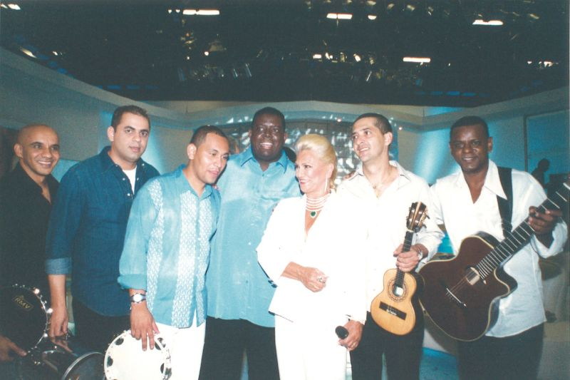
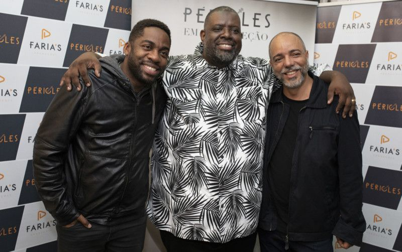
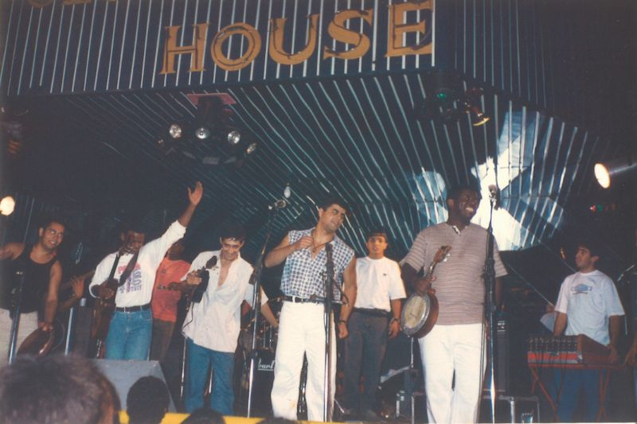

Tudo começou de um jeito simples. Éramos apenas amigos apaixonados por música, nos reunindo em uma garagem, sem grandes pretensões só querendo tocar, rir e curtir o som. Mas a música tem um poder incrível: quando ela vem da alma, ela encontra caminhos. E foi assim que a Banda Som & Alma nasceu. No início, era tudo improvisado. A gente levava os instrumentos de um lado pra outro, montava som com o que tinha e tocava por puro prazer. Com o tempo, começamos a ser chamados para tocar em aniversários, barzinhos e pequenos eventos. Cada apresentação era uma mistura de nervosismo e felicidade. O público foi crescendo, o carinho das pessoas também e, de repente, percebemos que aquilo já não era só um passatempo. Era um sonho tomando forma. Hoje, olhamos pra trás com orgulho. Já tivemos a honra de tocar em grandes eventos por todo o estado, e é incrível ver o quanto crescemos sem perder a essência. Continuamos com a mesma energia e paixão do início aquela vontade de colocar sentimento em cada acorde, emoção em cada nota e verdade em cada música. Nosso repertório é o reflexo de quem somos: versátil, dinâmico e cheio de alma. Tocamos desde o rock clássico até a MPB, sempre adaptando cada apresentação ao público e ao momento. Não existe um show igual ao outro, porque acreditamos que cada ocasião é única e é isso que faz o Som & Alma ser o que é: música viva, feita com o coração.
Quem Somos Marcos Vocalista e Líder “Eu sou o líder da banda, mas antes de tudo, sou alguém que vive da música e pela música. Já são mais de quinze anos animando festas, casamentos e eventos e o que me move é ver as pessoas sorrindo, dançando e se emocionando. É por isso que subo no palco: pra transformar momentos especiais em lembranças que ficam pra sempre. Cada show é um pedaço de mim que eu deixo ali, junto com o público.” Roberto Violonista e Compositor “Eu sou violonista e compositor da banda, e posso dizer que essa parceria com o Marcos é uma das mais bonitas da minha vida. Estamos juntos desde 2010, e a sintonia que a gente tem é o que faz tudo funcionar. A gente se entende no olhar, sabe o que o outro quer dizer com um simples acorde. Pra mim, tocar é muito mais do que entreter é emocionar. E é isso que a Som & Alma faz.” Nos Bastidores O Terceiro Membro “Eu sou aquele que o público quase nunca vê, mas que está sempre por trás de tudo. Cuido da parte técnica, da produção, da organização e de cada detalhe que faz o show acontecer. Pode não parecer, mas cada luz acesa, cada som limpo e cada entrada perfeita passa pelas minhas mãos. É uma honra fazer parte dessa história, mesmo nos bastidores, porque eu sei que cada show que dá certo tem um pedacinho do meu trabalho ali.”
O Que Nos Move “A Som & Alma é mais que uma banda. É uma família, uma história feita de risadas, desafios, estrada e muita música. A gente acredita que o que vem do coração chega ao coração e é isso que levamos a cada palco que pisamos. Nosso propósito é simples: levar som e emoção de forma autêntica, conectando pessoas através da música. A gente começou em uma garagem, e hoje percorre o estado inteiro, mas a verdade é que ainda tocamos com a mesma paixão de quando tudo começou. Porque enquanto existir alguém disposto a sentir a música com a gente, a Som & Alma vai continuar viva unindo o som à alma de quem ouve.” 